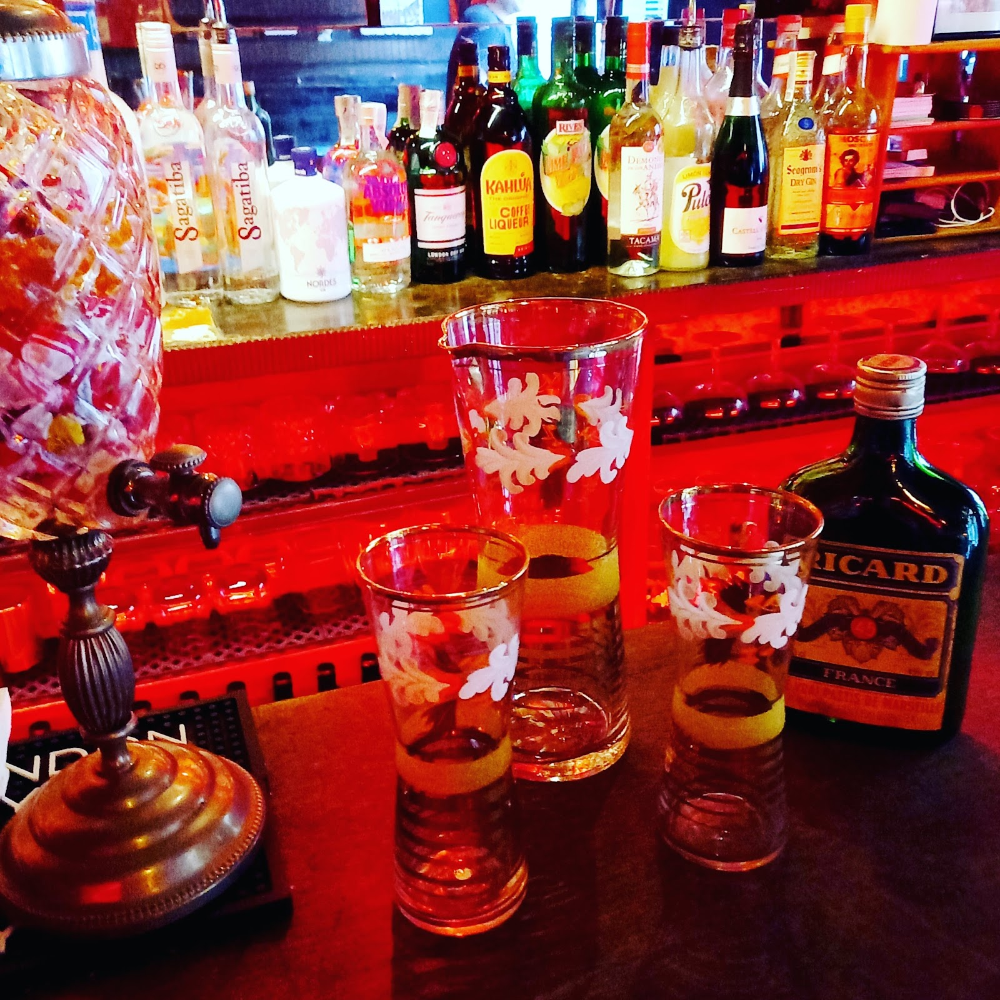

Obert el 1947, aquest diminut bar de cabaret conserva els cartells belle époque, la música francesa i les nits en directe. Un secret molt ben guardat del Raval.Opened in 1947, this tiny cabaret bar keeps its belle-époque posters, French music and live nights. One of El Raval's best-kept secrets.
Cada visita té la seva màgia: un old fashioned ben fet, un pastís amb aigua freda i, si tens sort, música francesa en directe. Lluny del turisme, ple d'ànima.Every visit has its magic: a well-made old fashioned, a pastis with cold water, and if you're lucky, live French music. Far from the tourist trail, full of soul.
